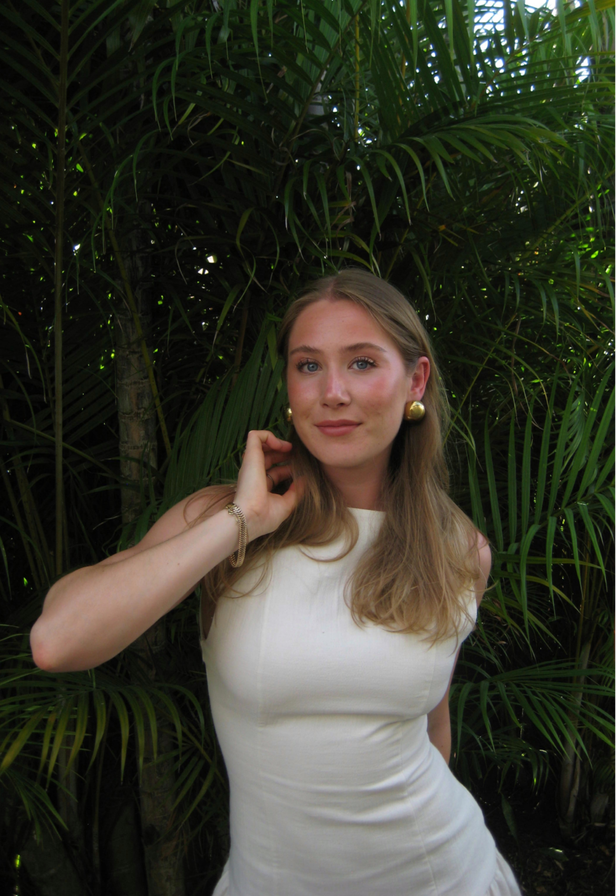

About me
I’m Filippa Persson, a 23 year old Interaction Design student at Stockholm University. Born in Gothenburg, now based in Stockholm.
I’ve always been drawn to the creative side of things and today that passion has found its place in my studies and work. I’m particularly interested in colour, typography, form, imagery and composition, and how these elements come together to create a strong visual identity. I love creating experiences that not only work well, but also feel cohesive, considered and exciting.
Through my studies, I have gained experience working across the entire design process, from exploring problems and developing concepts to creating prototypes and user-centered designs. While I’m particularly drawn to UI and visual design, I believe that great design is more than just how something looks. Without a thoughtful user experience, even strong visual design can lose its purpose and impact. I’m a creative person, a problem solver and a bit of a doer. I enjoy working with others, throwing around ideas and bringing them to life, but I’m also happy taking the lead and getting things done. I like structure, I like creating, and I love seeing an idea turn into something real.
Beyond digital design, you’ll find me taking photos, editing videos or exploring graphic design and other creative projects for fun.
Let’s turn ideas into something real!